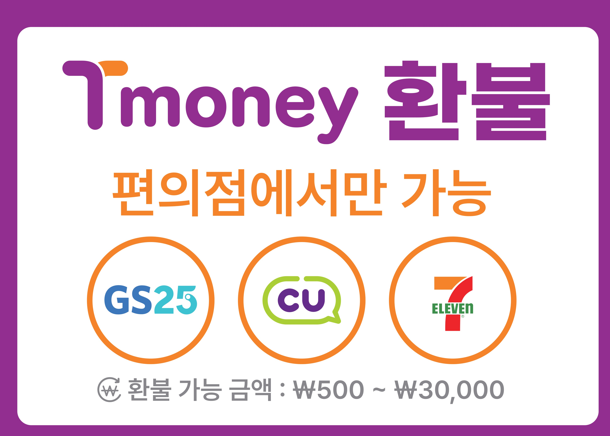
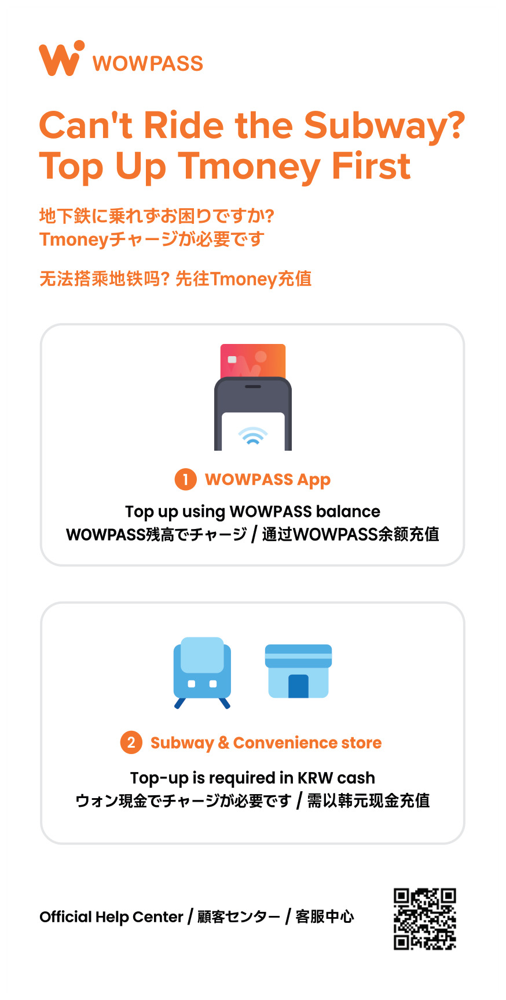
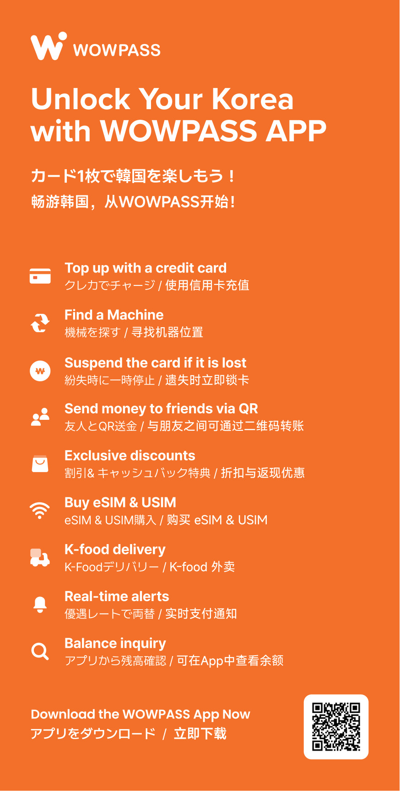

-
티머니 환불 안내 ›

-
WOW PASS 안내 ›


- 1터미널 시설 안내 ↗
-
직통 이용 안내 ↗
AREX 사이트 우측 상단에서 언어를 변경할 수 있습니다.
-
일반 이용 안내 ↗
AREX 사이트 우측 상단에서 언어를 변경할 수 있습니다.
-
도심공항 이용 안내 ↗
AREX 사이트 우측 상단에서 언어를 변경할 수 있습니다.
-
직통 하차 후 서울역 환승방법 ›